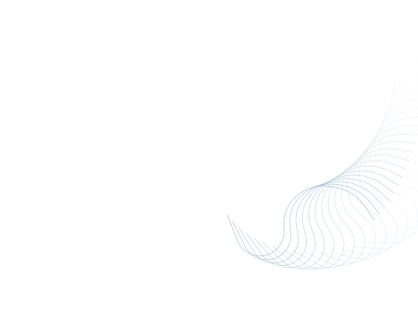
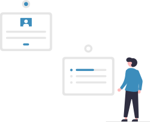

Pengelolaan Kinerja • PWTT • Evaluee
- Settings Evaluator
- Individual Goal Setting
- Nominate 360
- Realisasi Target
- Self Review
- Survey
- CoPI Feedback
Penilaian Behavior Survey untuk Anda


Penilaian Perilaku Berbasis Situasi
Pada bagian ini, Anda akan membaca beberapa skenario kerja sehari-hari.
Pilih tindakan yang paling sesuai dengan kondisi nyata Anda.
Klik tombol di bawah untuk memulai penilaian.